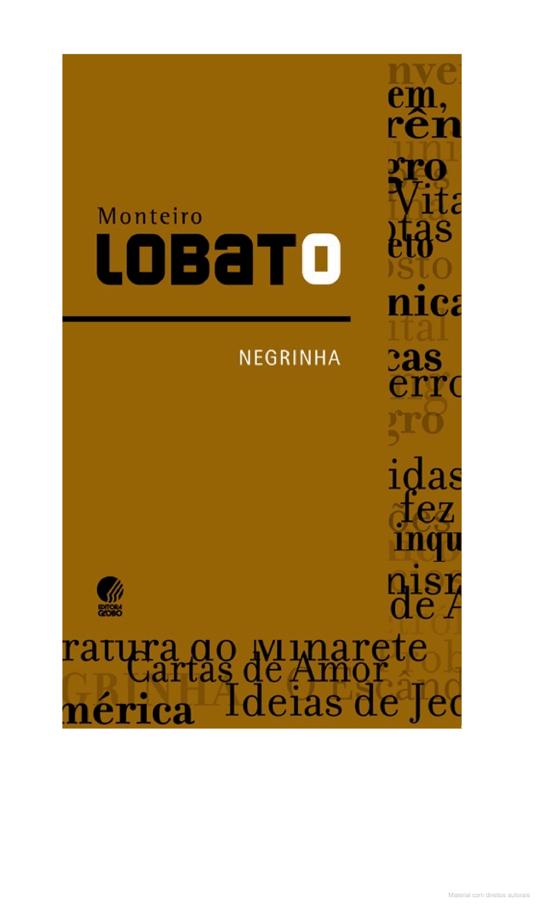

"Um país se faz com homens e livros."
- Monteiro Lobato
Enredo do conto “Negrinha”
O conto “Negrinha” narra a história de uma menina órfã, filha de escravos, que é criada por Dona Inácia, uma senhora branca, rica e extremamente cruel. A menina, chamada apenas de Negrinha, sofre abusos físicos e psicológicos constantes. Ela vive em um ambiente opressivo e nunca experimenta carinho ou afeto. Quando as netas de Dona Inácia vêm passar uma temporada na casa, Negrinha, pela primeira vez, é exposta a um mundo diferente, onde as crianças brincam e se divertem. No entanto, essa breve experiência de felicidade acaba por aumentar ainda mais seu sofrimento.
Temas abordados
- Racismo: O conto explora o racismo e o preconceito racial de forma intensa, mostrando a desumanização e a violência sofrida pela personagem principal, uma menina negra em uma sociedade pós-escravidão.
- Desigualdade social: Lobato critica a diferença de tratamento entre brancos e negros, ricos e pobres, evidenciando as injustiças e as dificuldades enfrentadas pelos mais pobres.
- Crueldade e opressão: A história expõe a crueldade das elites, representada por Dona Inácia, e como o poder pode ser usado para oprimir os mais fracos.
Estilo e Importância
“Negrinha” é escrito com um estilo direto e crítico, característico de Monteiro Lobato. A obra é um marco do pré-modernismo brasileiro, abordando temas que seriam amplamente explorados no modernismo. O conto é frequentemente utilizado em vestibulares devido à sua importância social e à habilidade de Lobato em capturar os problemas de uma sociedade marcada pelo preconceito e pela desigualdade.
Impacto
O conto “Negrinha” é uma leitura importante para entender as tensões raciais e sociais no Brasil da época de Lobato. A obra, com seu tom crítico e muitas vezes chocante, continua relevante, pois os temas abordados ainda têm impacto na sociedade de hoje.
Contexto Histórico
O livro Negrinha, de Monteiro Lobato, publicado em 1920, está inserido no período do Pré-Modernismo brasileiro. Essa obra reflete o contexto social pós-abolição da escravidão no Brasil, abordando temas como racismo e desigualdade social. A narrativa critica a sociedade da época ao mostrar a dura realidade de uma órfã negra que sofre abusos e humilhações, evidenciando as injustiças herdadas do período escravocrata.